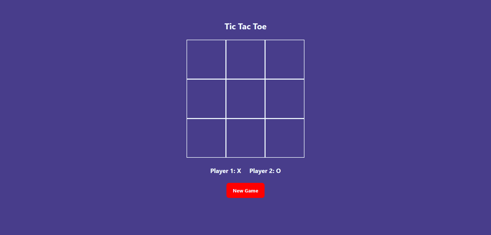

We gaan een spelletje Tic Tac Toe maken!
Daarvoor hebben we drie codetalen nodig
Geen paniek, we houden de code eenvoudig, maar maken wel iets interactief!
We hebben een code-editor nodig. In de workshop gebruiken we Visual Studio Code.
Tijd om te coderen, zodat we meer te zien krijgen dan een witte webpagina!
index.html-bestand. Bewaar vervolgens dat bestand.main.css-bestand. Bewaar vervolgens dat bestand. background-color: orange; en verander orange;
naar bijvoorbeeld darkslateblue;
De achtergrond is nu blauw-paarsachtig.<body>-tag en sluitings </body>-tag
Je zal nu een Tic Tac Toe raster zien verschijnen.
Nu moeten we nog zorgen dat we het spelletje ook kunnen spelen.
<script src="./scripts/app.js"></script>
app.js en zet er het volgende
in:alert('Hello world')app.js bestand. In deze code maken we een array die de ingevulde waarden van het speelveld bijhoudt.null, dit betekent dat er geen waarde is toegekend. We leggen ook vast dat de actieve speler Speler 1 is.
app.js bestand.setGridValue functie. Vervang in de setGridValue functie de console.log(gridValues); lijn door fillGridHTML(gridValues);